Skatt på uføretrygd er et komplekst område innen norsk skatterett som påvirker både private uføretrygdmottakere og arbeidsgivere. Uføretrygd regnes som skattepliktig inntekt og behandles anderledes enn ordinær lønn i både regnskaps- og skattemessig sammenheng.
Seksjon 1: Grunnleggende om Uføretrygd og Skatteplikt
1.1 Hva er Uføretrygd?
Uføretrygd er en stønad fra NAV som utbetales til personer som har varig redusert arbeidsevne på grunn av sykdom eller skade. Uføretrygden erstatter tidligere arbeidsrettede rehabiliteringspenger og garantipensjon.
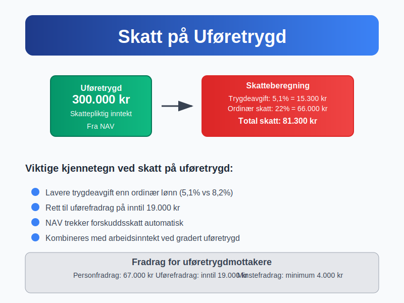
Forutsetninger for uføretrygd:
- Varig nedsatt arbeidsevne med minst 50%
- Medlem i folketrygden
- Poengår: Minimum 3 poengår etter fylte 16 år
- Alle muligheter for arbeidsrettede tiltak er vurdert
For å beskytte inntekt utover uføretrygd kan man tegne en privat uføreforsikring. Les mer i Uføreforsikring.
1.2 Skatteplikt på Uføretrygd
Uføretrygd er skattepliktig inntekt i henhold til skatteloven § 5-40. Dette betyr at mottakerne må betale både ordinær inntektsskatt og trygdeavgift av uføretrygden.
Skattemessig behandling:
| Element | Behandling | Særlige regler |
|---|---|---|
| Grunnbeløp | Skattepliktig | Som ordinær lønn |
| Barnetillegg | Skattepliktig | Behandles separat |
| Kompensasjonstillegg | Skattefritt | Ikke regnet som inntekt |
| Hjelpestønad | Skattefritt | Ikke skattepliktig |
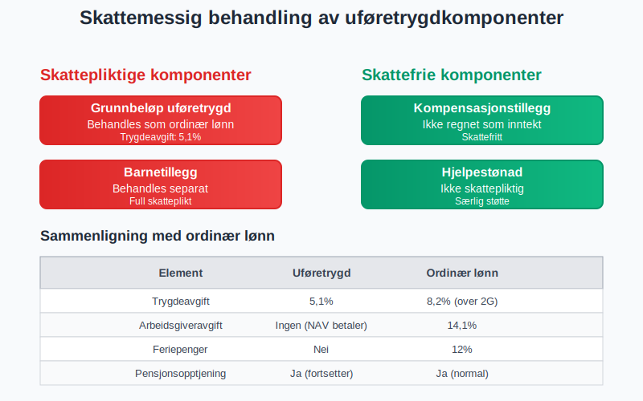
1.3 Forskjeller fra Ordinær Lønn
Uføretrygd behandles annerledes enn vanlig arbeidslønn:
Viktige forskjeller:
- Ingen arbeidsgiveravgift: NAV betaler ikke arbeidsgiveravgift
- Redusert trygdeavgift: Lavere sats enn for lønnsarbeid
- Feriepenger: Uføretrygdmottakere får ikke feriepenger
- Pensjon: Opptjening av pensjonspoeng fortsetter
- Sykerettigheter: Ved sykdom gjelder spesielle regler for sykepenger ved gradert uføretrygd
Seksjon 2: Beregning av Skatt på Uføretrygd
2.1 Skattesatser og Beregningsgrunnlag
Skattesatsene for uføretrygd følger ordinære satser, men med noen justeringer:
Trygdeavgift på uføretrygd (2024):
| Inntektsnivå | Trygdeavgiftssats | Sammenligning med lønn |
|---|---|---|
| Under 2G (≈ 232.000 kr) | 5,1% | Samme som lønn |
| Over 2G | 5,1% | Lavere enn lønn (8,2%) |
Beregningseksempel:
Årlig uføretrygd: 300.000 kr
Trygdeavgift: 300.000 × 5,1% = 15.300 kr
Ordinær skatt (eksempel): 300.000 × 22% = 66.000 kr
Total skatt: 15.300 + 66.000 = 81.300 kr
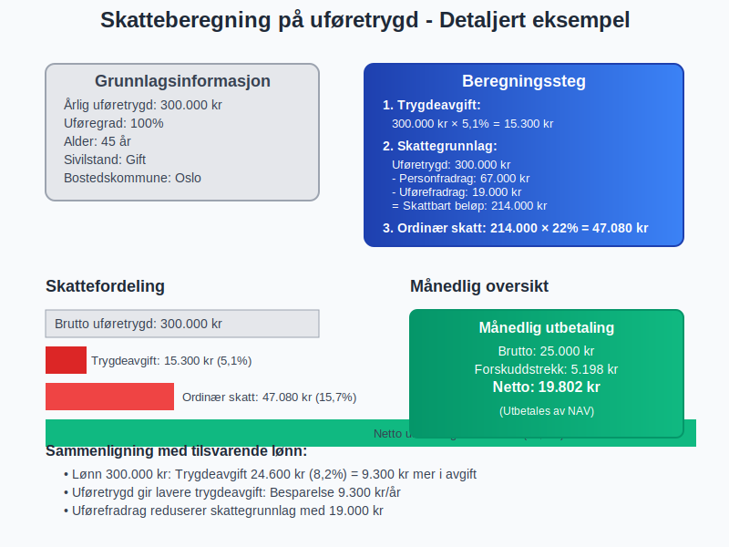
2.2 Forskuddstrekk og Skattekort
NAV trekker forskuddsskatt av uføretrygden basert på:
Trekkgrunnlag:
- Prosentsats fra skattekort eller 22% (standard)
- Tabelltrékk basert på antall trekkdager per måned
- Fradrag for personfradrag og andre standardfradrag
Særlige bestemmelser:
- Minstegrense: Trekk først når uføretrygd overskrider personfradrag
- Maksgrense: Ikke trekk mer enn 50% av månedlig uføretrygd
- Justeringer: Kan justeres ved endringer i trekksats
2.3 Tilleggsfradrag og Spesielle Fradrag
Uføretrygdmottakere kan ha rett til særlige fradrag:
Uførefradrag:
- Størrelse: Inntil 19.000 kr (2024) for personer med varig nedsatt ervervsevne
- Vilkår: Minimum 2/3 uførhet
- Beregning: Graderes etter uføregrad
Andre relevante fradrag:
| Fradragstype | Beløp (2024) | Vilkår |
|---|---|---|
| Personfradrag | 67.000 kr | Standard for alle |
| Uførefradrag | Inntil 19.000 kr | Ved uførhet |
| Foreldrefradrag | 25.000 kr | Enslige forsørgere |
| Minstefradrag | Minimum 4.000 kr | Som vanlig inntekt |
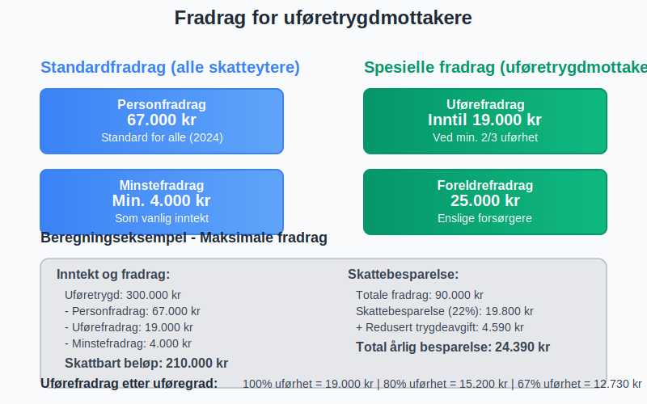
Seksjon 3: Regnskapsføring av Uføretrygdutbetalinger
3.1 Arbeidsgivers Regnskapsføring
Arbeidsgivere som utbetaler lønn til ansatte som mottar gradert uføretrygd må føre dette korrekt:
Bokføringseksempel for gradert uføretrygd (50% stilling):
Lønn for 50% stilling: 250.000 kr/år
Uføretrygd fra NAV: 150.000 kr/år
Månedlig bokføring:
Debet: Lønnskostnad 20.833 kr
Kredit: Skyldig lønn 20.833 kr
Debet: Skyldig lønn 20.833 kr
Kredit: Bank 16.666 kr (netto utbetaling)
Kredit: Forskuddstrekk 2.917 kr
Kredit: Arbeidsgiveravgift 1.250 kr
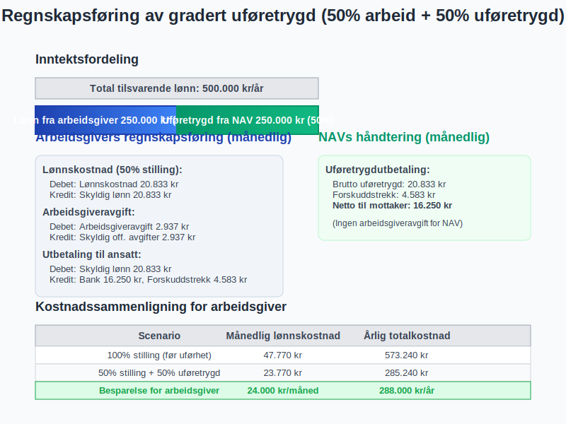
3.2 Arbeidsgivers Sosiale Kostnader
Sosiale kostnader påvirkes når ansatte mottar uføretrygd:
Arbeidsgiveravgift beregning:
- Full stilling: Arbeidsgiveravgift av full lønn
- Gradert uføretrygd: Arbeidsgiveravgift kun av lønnsdelen
- Ingen avgift på uføretrygddelen som utbetales av NAV
Eksempel sosiale kostnader:
| Element | Fulltidsstilling | 50% stilling + uføretrygd |
|---|---|---|
| Grunnlønn | 500.000 kr | 250.000 kr |
| Arbeidsgiveravgift (14,1%) | 70.500 kr | 35.250 kr |
| Pensjon (2%) | 10.000 kr | 5.000 kr |
| Total kostnad | 580.500 kr | 290.250 kr |
3.3 NAVs Regnskapsføring og Rapportering
NAV håndterer både utbetaling og skattetrekk av uføretrygd:
NAVs prosess:
- Beregning av månedlig uføretrygd
- Skattetrekk basert på trekkort eller standardsats
- Utbetaling av netto beløp til mottaker
- Innbetaling av forskuddstrekk til Skatteetaten
- Rapportering via A-melding og årsoppgave
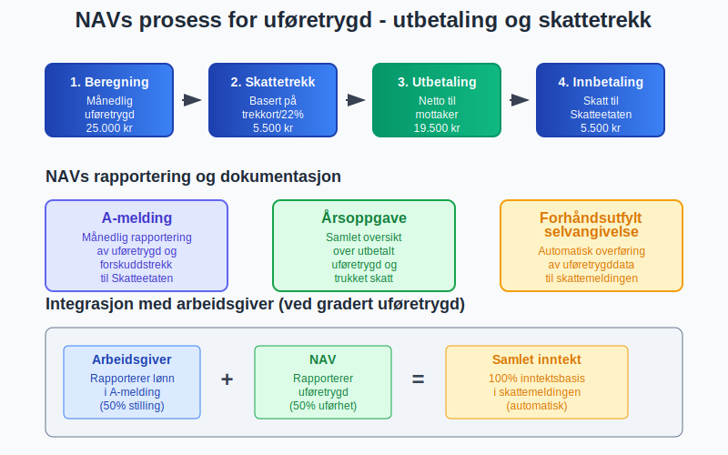
Seksjon 4: Selvangivelse og Årsoppgjør
4.1 Selvangivelse for Uføretrygdmottakere
Uføretrygdmottakere må innlevere selvangivelse som andre skattytere:
Forhåndsutfylt informasjon:
- Uføretrygd fra NAV (post 2.1.1)
- Forskuddstrekk trukket av NAV
- Relevante fradrag beregnet automatisk
Informasjon mottaker må fylle ut:
- Andre inntekter (arbeid, kapital)
- Fradrag som ikke er standard
- Formue og gjeld
- Endringer i personlige forhold
4.2 Kombinasjon med Arbeidsinntekt
Kombinert inntekt fra arbeid og uføretrygd krever særlig oppmerksomhet:
Skattemessige konsekvenser:
| Inntektstype | Trygdeavgift | Skattefradrag |
|---|---|---|
| Lønn fra arbeid | 8,2% (over 2G) | Minstefradrag på lønn |
| Uføretrygd | 5,1% | Uførefradrag |
| Samlet | Beregnes separat | Kombineres i selvangivelse |
Beregningseksempel kombinert inntekt:
Lønn (50% stilling): 250.000 kr
Uføretrygd: 200.000 kr
Total inntekt: 450.000 kr
Trygdeavgift:
- Lønn: 250.000 × 8,2% = 20.500 kr
- Uføretrygd: 200.000 × 5,1% = 10.200 kr
- Total: 30.700 kr
Ordinær skatt: 450.000 × 22% = 99.000 kr
Minus personfradrag og uførefradrag: -19.000 kr
= 80.000 kr
Total skatt: 30.700 + 80.000 = 110.700 kr
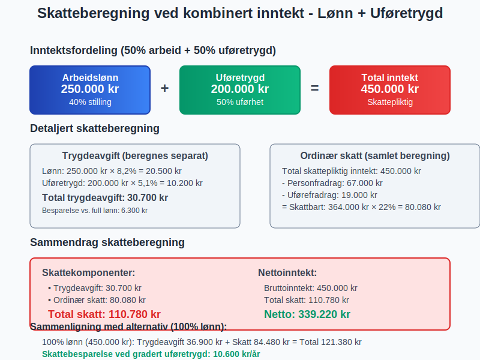
4.3 Restskatt og Tilbakebetaling
Årsoppgjøret kan resultere i både restskatt og tilbakebetaling:
Vanlige årsaker til restskatt:
- For lavt skattetrekk i løpet av året
- Andre inntekter ikke dekket av forskuddstrekk
- Endringer i uføregrad eller andre forhold
Vanlige årsaker til tilbakebetaling:
- For høyt skattetrekk av NAV
- Større fradrag enn forhåndsberegnet
- Redusert inntekt gjennom året
Seksjon 5: Arbeidsgiver og Uføretrygd
5.1 Inkludering og Arbeidsplassvurdering
Arbeidsgivere har viktige oppgaver når ansatte mottar uføretrygd:
Arbeidsgivers ansvar:
- Tilrettelegging av arbeidsoppgaver
- Medisinsk oppfølging og HMS-vurderinger
- Kompetanseutvikling tilpasset arbeidsevne
- Rapportering til NAV ved endringer
Økonomiske incentiver for arbeidsgivere:
| Ordning | Formål | Maksimalt tilskudd |
|---|---|---|
| Tilretteleggingstilskudd | Fysisk tilrettelegging | 200.000 kr |
| Mentortilskudd | Oppfølging og støtte | 75.000 kr/år |
| Lønnssubsidiering | Redusert produktivitet | 75% av lønn |
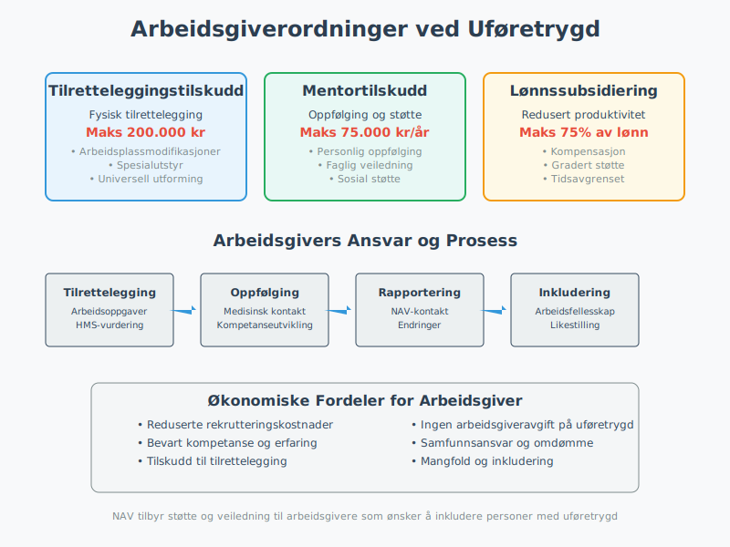
5.2 Overganger mellom Ordninger
Overganger mellom ulike trygdeordninger påvirker regnskapsføringen:
Typiske overganger:
- Sykepenger → Arbeidsavklaringspenger → Uføretrygd
- Gradert uføretrygd → Full uføretrygd
- Uføretrygd → Alderspensjon
Regnskapsmessige konsekvenser:
- Endret arbeidsgiveravgift ved overgang til uføretrygd
- Opphør av sykepengerefusjon fra NAV
- Nye rapporteringskrav i A-melding
5.3 Rapportering og Compliance
Arbeidsgivere må rapportere korrekt om ansatte med uføretrygd:
A-melding rapportering:
- Lønn fra arbeidsgiver rapporteres normalt
- Uføretrygd rapporteres av NAV
- Arbeidsforhold må være korrekt klassifisert
- Endringer i stillingsprosent meldes umiddelbart
Seksjon 6: Spesielle Situasjoner og Utfordringer
6.1 Midlertidig vs. Varig Uføretrygd
Forskjellene mellom midlertidig og varig uføretrygd påvirker skattebehandlingen:
Midlertidig uføretrygd:
- Maksimal varighet: 3-5 år avhengig av alder
- Revurdering regelmessig
- Samme skattebehandling som varig uføretrygd
- Mulighet for arbeidsrettede tiltak
Varig uføretrygd:
- Permanent ytelse (med mulighet for revurdering)
- Alderspensjon fra 67 år
- Pensjonsopptjening fortsetter
- Skattemessig behandling som permanent inntekt
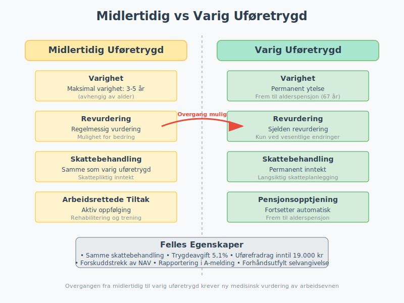
6.2 Internasjonale Forhold
Uføretrygd for personer bosatt i utlandet eller med utenlandsk statsborgerskap:
Skatteplikt i Norge:
- Norsk statsborger bosatt i utlandet: Begrenset skatteplikt
- Utenlandsk statsborger i Norge: Full skatteplikt
- Trygdeavtaler kan påvirke beskatningen
- Kildeskatt kan være aktuelt
Eksportabilitet:
| Land/region | Eksportabilitet | Skattemessige konsekvenser |
|---|---|---|
| EØS-land | Full eksport | Skatt til oppholds-/bostats-land |
| Trygdeavtale-land | Begrenset eksport | Følger avtalens bestemmelser |
| Andre land | Meget begrenset | Kan miste rett til uføretrygd |
6.3 Etterbetaling og Omberegning
Etterbetaling av uføretrygd kan skape komplekse skattemessige situasjoner:
Årsaker til etterbetaling:
- Forsinket saksbehandling hos NAV
- Endret uføregrad med tilbakevirkende kraft
- Feil beregninger som rettes senere
- Klagesaker som gir medhold
Skattemessig behandling av etterbetaling:
- Inntektsår: Skattes i det år etterbetalingen utbetales
- Skattetrekk: NAV trekker skatt av hele etterbetalingen
- Progressionsvirkning: Kan gi høy marginalskatt
- Lemping: Mulig å søke om lemping ved høy ekstraskatt
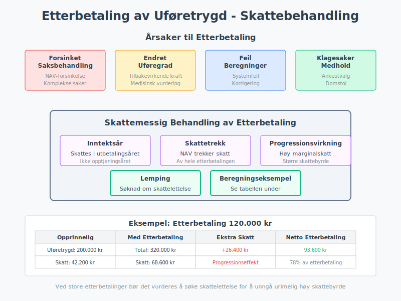
Seksjon 7: Digitale Verktøy og Systemer
7.1 NAV og Digitale Tjenester
NAVs digitale løsninger forenkler administrasjon av uføretrygd:
Viktige systemer:
- nav.no: Hovedportal for alle tjenester
- Ditt NAV: Personlig område med oversikt
- Aktivitetsplaner: Oppfølging av arbeidsrettede tiltak
- Meldekort: Rapportering av aktivitet og inntekt
Integrasjon med skattesystemet:
- Automatisk overføring av data til Skatteetaten
- A-melding fra NAV for uføretrygd
- Forhåndsutfylling av selvangivelse
- Sanntidsrapportering av endringer
7.2 Skatteetatens Systemer
Skatteetaten håndterer uføretrygd gjennom sine digitale kanaler:
Relevante tjenester:
- Altinn: Selvangivelse og korrespondanse
- MinID/BankID: Sikker pålogging
- Skattemelding: Digital innlevering
- Forskuddsskatt: Endring av trekksats
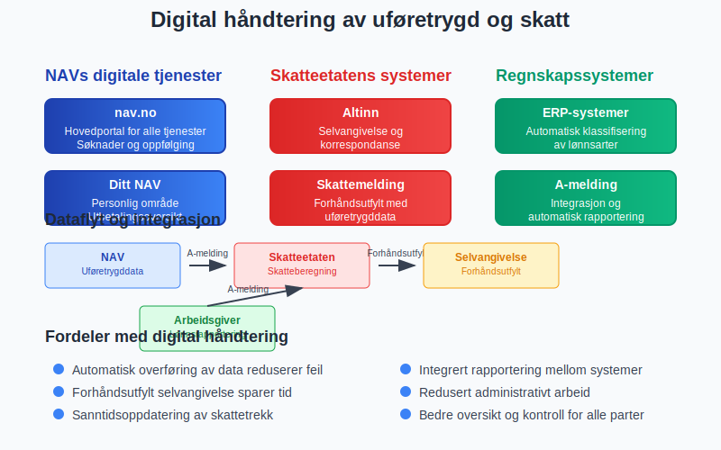
7.3 Regnskapssystemer og Integration
Moderne regnskapssystemer håndterer uføretrygd-relaterte poster:
Funksjonalitet:
- Automatisk klassifisering av lønnsarter
- Beregning av sosiale kostnader
- A-melding integrasjon
- Rapportering til myndighetene
Systemkrav:
| System | Uføretrygd-funksjonalitet | Integrationsgrad |
|---|---|---|
| Tripletex | Full støtte for gradert uføretrygd | Høy |
| Visma | Komplett lønn og sosiale kostnader | Høy |
| PowerOffice | Grunnleggende støtte | Medium |
| Excel/manuelt | Begrenset funksjonalitet | Lav |
Seksjon 8: Fremtidige Endringer og Utvikling
8.1 Pågående Reformer
Trygdereformen og andre initiativ påvirker fremtidig behandling:
Foreslåtte endringer:
- Økt arbeidsgrad for uføretrygdmottakere
- Bedre overganger mellom ordninger
- Digitalisering av saksbehandling
- Individuell oppfølging og tilrettelegging
Skattemessige konsekvenser:
- Endret skatteberegning ved gradert arbeid
- Nye fradragsordninger for arbeidsrelaterte kostnader
- Forenklet rapportering mellom NAV og Skatteetaten
8.2 Teknologisk Utvikling
Automatisering og AI vil påvirke fremtidig administrasjon:
Forventede utviklingstrekk:
- Automatisk saksbehandling hos NAV
- Prediktiv analyse for arbeidsevnevurdering
- Sanntidsintegrasjon mellom systemer
- Personalisert veiledning og støtte
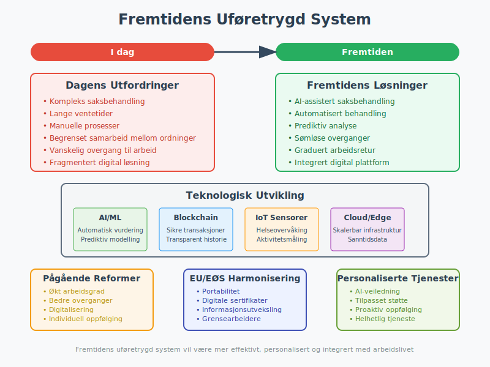
8.3 EU/EØS Harmonisering
Europeisk koordinering av trygdeordninger påvirker norske regler:
Pågående arbeid:
- Portabilitet av rettigheter mellom land
- Digitale sertifikater for trygderettigheter
- Automatisk informasjonsutveksling mellom myndigheter
- Forenklede prosedyrer for grensearbeidere
Seksjon 9: Praktiske Eksempler og Case
9.1 Case 1: Overgang fra Sykepenger til Uføretrygd
Situasjon: Arbeidstaker går fra 100% sykepenger til 70% uføretrygd
Før overgang (sykepenger):
Månedslønn: 45.000 kr
Sykepengerefusjon fra NAV: 45.000 kr
Arbeidsgiveravgift: 45.000 × 14,1% = 6.345 kr
Etter overgang (uføretrygd):
Uføretrygd fra NAV: 31.500 kr/mnd (70%)
Restarbeidsevne: 30%
Potensiell lønn: 13.500 kr/mnd
Hvis ikke i arbeid:
- Ingen lønnskostnad for arbeidsgiver
- Ingen arbeidsgiveravgift
- Ansettelsesforhold kan opprettholdes
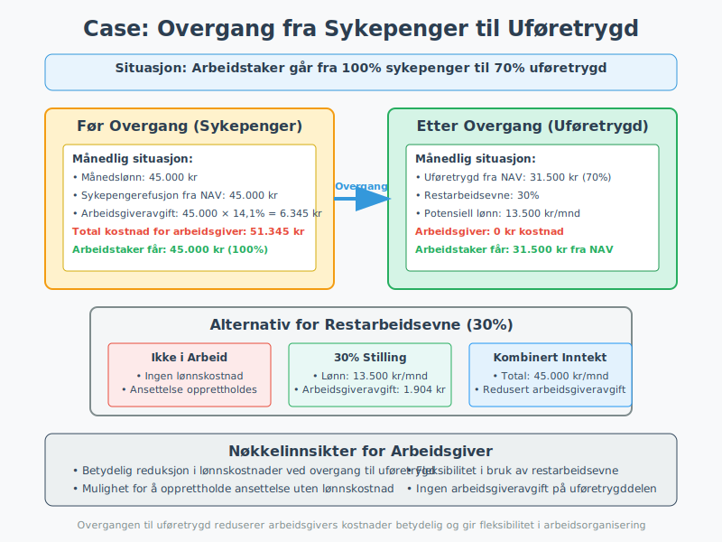
9.2 Case 2: Gradert Uføretrygd med Deltidsarbeid
Situasjon: 50% uføretrygd kombinert med 40% stilling
Inntektsfordeling:
Full lønn tilsvarende: 500.000 kr/år
Uføretrygd (50%): 250.000 kr/år fra NAV
Arbeidslønn (40%): 200.000 kr/år fra arbeidsgiver
Total inntekt: 450.000 kr/år
Skattemessig behandling:
Trygdeavgift:
- Uføretrygd: 250.000 × 5,1% = 12.750 kr
- Lønn: 200.000 × 8,2% = 16.400 kr
- Total trygdeavgift: 29.150 kr
Ordinær skatt:
- Skattegrunnlag: 450.000 kr
- Personfradrag: -67.000 kr
- Uførefradrag: -19.000 kr
- Skattbart beløp: 364.000 kr
- Skatt (22%): 80.080 kr
Total skatt og avgifter: 109.230 kr
9.3 Case 3: Etterbetaling med Skattemessige Konsekvenser
Situasjon: Etterbetaling av uføretrygd på 120.000 kr
Opprinnelig situasjon:
Årlig uføretrygd: 200.000 kr
Årlig skatt og avgifter: 42.200 kr
Netto inntekt: 157.800 kr
Med etterbetaling:
Etterbetaling: 120.000 kr
Total inntekt i etterbetalingsåret: 320.000 kr
Økt skatt og avgifter: 26.400 kr
Netto etterbetaling: 93.600 kr
Progressionseffekt:
- Høyere marginalskatt på etterbetalingen
- Mulig søknad om lemping
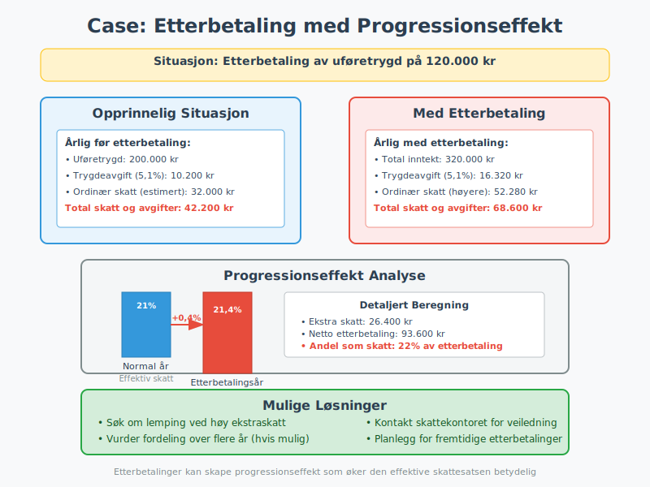
Seksjon 10: Compliance og Kvalitetssikring
10.1 Kontrollrutiner for Arbeidsgivere
Systematisk kontroll sikrer korrekt håndtering av uføretrygd:
Månedlige kontroller:
- Korrekt klassifisering av lønnsarter
- Riktig beregning av arbeidsgiveravgift
- Oppdaterte stillingsprosenter
- A-melding kontroll og validering
Kvartalsvise kontroller:
- Avstemming med NAV-utbetalinger
- Kontroll av skattetrekk og rapportering
- Oppdatering av arbeidsavtaler
- HMS og tilretteleggingsvurderinger
Årlige kontroller:
- Årsoppgave for lønnsforhold
- Kontroll av pensjonsopptjening
- Evaluering av tilretteleggingstiltak
- Compliance med arbeidsmiljøloven
10.2 Dokumentasjon og Arkivering
Strukturert dokumenthåndtering er essensielt:
Viktige dokumenter:
- Uførevedtak fra NAV
- Arbeidsevnevurderinger og legeerklæringer
- Tilretteleggingsplaner og oppfølging
- Korrespondanse med NAV og Skatteetaten
Oppbevaringstid:
| Dokumenttype | Oppbevaringstid | Lovgrunnlag |
|---|---|---|
| Lønnsbilag | 5 år | Regnskapsloven |
| Skattebilag | 10 år | Skatteloven |
| NAV-korrespondanse | 5 år | Folketrygdloven |
| Arbeidsavtaler | Permanent | Arbeidsmiljøloven |
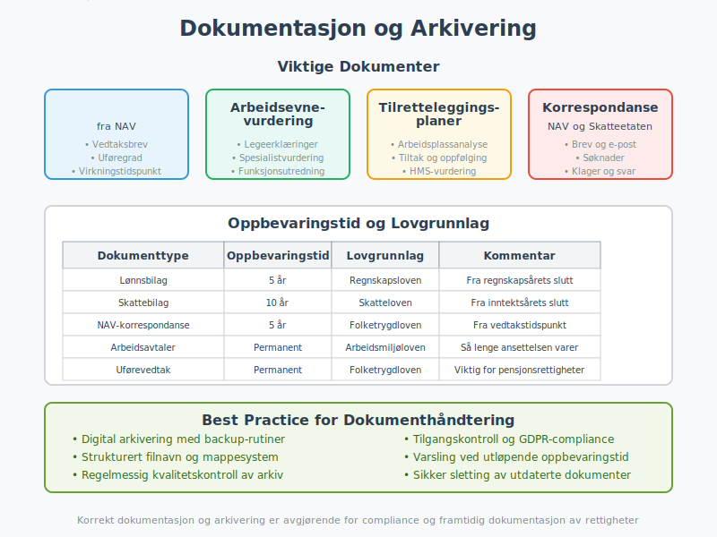
10.3 Risikofaktorer og Mitigering
Identifikasjon og håndtering av risikoområder:
Hovedrisikofaktorer:
- Feil klassifisering av ansettelsesforhold
- Incorrect rapportering til myndighetene
- Manglende oppdatering ved endringer
- Insufficient dokumentasjon av tilrettelegging
Mitigeringstiltak:
| Risiko | Mitigering | Ansvarlig |
|---|---|---|
| Feil lønnsrapportering | Automatiserte kontroller | Lønnsansvarlig |
| Manglende tilrettelegging | HMS-system og oppfølging | HR/HMS |
| Skattemessige feil | Ekstern rådgivning | Økonomisjeef |
| NAV-kommunikasjon | Dedicated kontaktperson | HR-leder |
Konklusjon
Skatt på uføretrygd er et komplekst område som krever grundig forståelse av både trygderett, skatterett og regnskapsføring. For både private uføretrygdmottakere og arbeidsgivere er det essensielt å forstå de ulike reglene og konsekvensene som følger av uføretrygd som skattepliktig inntekt.
Nøkkelinnsikter:
- Skatteplikt: Uføretrygd er skattepliktig inntekt som behandles delvis annerledes enn ordinær lønn
- Lavere trygdeavgift: 5,1% vs. 8,2% for høye lønninger gir skattefordel
- Spesielle fradrag: Uførefradrag på inntil 19.000 kr reduserer skattegrunnlaget
- Arbeidsgiverpåvirkning: Reduserte sosiale kostnader ved overgang til uføretrygd
Praktisk anvendelse:
For regnskapsførere og HR-ansvarlige er det viktig å:
- Korrekt klassifisere og rapportere uføretrygd-relaterte poster
- Beregne riktig arbeidsgiveravgift ved gradert uføretrygd
- Sikre compliance med rapporteringskrav til NAV og Skatteetaten
- Dokumentere tilretteleggingstiltak og oppfølging
Fremtidsperspektiv:
Digitalisering og automatisering vil fortsette å forenkle administrasjon av uføretrygd, mens pågående reformer sikter mot økt arbeidsdeltagelse og bedre overganger mellom ordninger. Arbeidsgivere som investerer i inkluderende arbeidsplasser og systematisk oppfølging vil være best posisjonert for å dra nytte av både menneskelige ressurser og økonomiske incentiver.
Strategisk betydning:
Korrekt håndtering av skatt på uføretrygd bidrar ikke bare til regelverksetterlevelse, men også til sosial inkludering og bærekraftig virksomhetsdrift. Ved å forstå og anvende reglene proaktivt kan både privatpersoner og organisasjoner optimalisere både økonomiske og sosiale utfall.